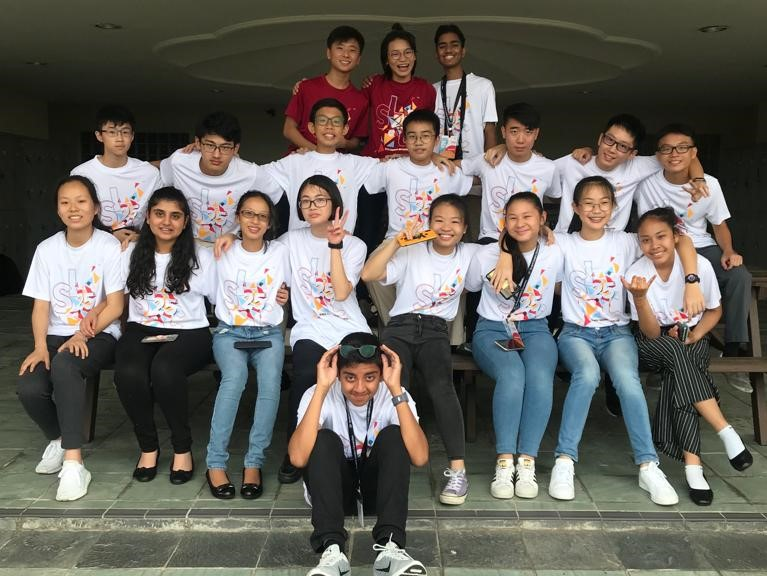

Youth Faculty 2: Social Mobility
Under Youth Assembly 1: Social Integration
Hello! We are Youth Faculty 2, and the issue we are discussing is Social Mobility, mainly how education helps to promote upward social mobility. Social mobility is the movement of individuals, families, households, or other categories of people within or between social strata in a society.
While the structure of the education system facilitates upward social mobility if carried through successfully, there are certain factors that impede everyone receiving equal access to education resources. Such factors include, social economic status disparity, age, race and gender inequality.
Our solution focuses on how to make education accessible for all, regardless of their background such that everyone has a chance to pursue their own future. As such, our solutions include
- providing subsidies to lower income students for them to receive quality education
- allow lower income students to stay in boarding schools for a more conducive learning environment
- making education compulsory for everyone
- encouraging more conversation between and within community groups so as to align everyone to believe in the importance of education for all
The Lens
Here is our Lens video, essentially it is a short skit put up by our YF which encapsulates the major details and stakeholders involved with regards to the topic of social mobility, in which we came up with different settings, characters and solutions with regards to social mobility.
Exhibition
Initially, we were in quite abit of rush as we overestimated the time allocated towards exhibition and barely had time to finish the boards and pour out our ideas before the deadline. The arrangements and content of our boards were as follows:
- Title and brief introduction to topic
- Case studies and causes of “social mobility”
- Solutions and examples
- Impacts
- Stakeholders
(here we would include your exhibition boards, hopefully you left it in ops room)
THANK YOU
Our YF has developed a deeper understanding towards the concept of “social mobility” and the everlasting impacts or detriments it could place upon society. Besides understanding how education can be used as a stepping stone towards ascending the social strata, we have also formulated feasible and pragmatic approaches in which society as a whole can adopt towards tacking the issue of lack of “social mobility”, especially in developing countries (e.g. Caste system in India). We have also forged tightly-knitted friendships amongst our peers and friends from overseas and would like to once again, thank the OT and HCI/NY for organising this memorable event.